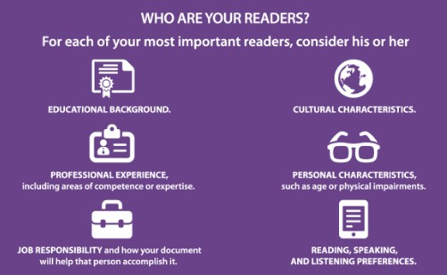

Detail from Determining the Characteristics of Your Audience, from Practical Strategies for Technical Communication.This module explores how audience and purpose shape technical writing and how persuasion can help you make effective recommendations.
The concepts you read about this week apply to every project you will do in the course—and ultimately to the projects you will do in the workplace.
Optional Course Advice Pages & Videos
Beginning this week, I will post advice and related resources that apply to the work you are doing and what we are focusing on in the course. These posts will show up in the Twitter feed for @HokieTengrrl, which you will find on the course home in Canvas under the “Canvas Announcements & Course Advice” heading.
These pages and videos are optional, but they can help you improve your work in the course. Most are short and direct. If you choose to read them and to watch the related videos, be sure to note the time in your Weekly Work Log.
Objectives for this Week
After completing this week’s activities, you address the following course objectives:
Analyze the rhetorical situation and determine the appropriate audience or users of written communication, considering the needs of global audiences and people with disabilities. [CLO 1]
Prepare to conduct research appropriate to workplace problem solving, such as literature review, evaluation of online resources, interview, and site inspection. [CLO 2]
Consider the ethical and human implications of my situation. [CLO 3]
Use conventions of various workplace genres, such as proposals, instructions, correspondence, reports, and slide decks, with understanding of how the genre conventions can be used as heuristics and as principles of arrangement. [CLO 4]
Collaborate with classmates in planning, researching, writing, revising, and presenting information. [CLO 5]
Activities for this Week
Available Points: 50
Due Dates:
Thursday, February 4 at 11:59 PM: All activities due.
Monday, February 8 at 11:59 PM: Grace period ends for all work.
⛱ Spring Break Day: Friday, February 5
Because of the short work week, you will earn only 50 points, rather than the typical 60 points.
Pay attention to the length specifications in the activities. I am specifically asking for short responses since you have less time to work this week.
I want you to take a break from this class this week. Please be sure to take some time off.
I will take Friday off as well. Look for responses to any email or Canvas messages that you send me by Sunday, February 7.
📚 To Read This Week
Markel & Selber, Ch. 5: “Analyzing Your Audience and Purpose” and the one-sheet summary “Determining the Important Characteristics of Your Audience.”
Compose details about your Recommendation Topic, and persuade me that you have made a good choice with your answers..
💬 To Discuss This Week
Follow the instructions in the Topic Feedback Discussion to share what you have written with your group.
Read and respond to the questions posted by the other members of your group. As a group, work to ensure that every person in the group gets at least two responses.
📓 To Track This Week
Track and reflect on the work you have done for the week in your xxxxxxxxxxxxx, reviewing the Weekly Work Log Guidelines if needed.
Complete the xxxxxxxx to claim the points for the work you have done this week. You have an unlimited number of times to complete the self-assessment. Your points will be recorded automatically when you submit your quiz.